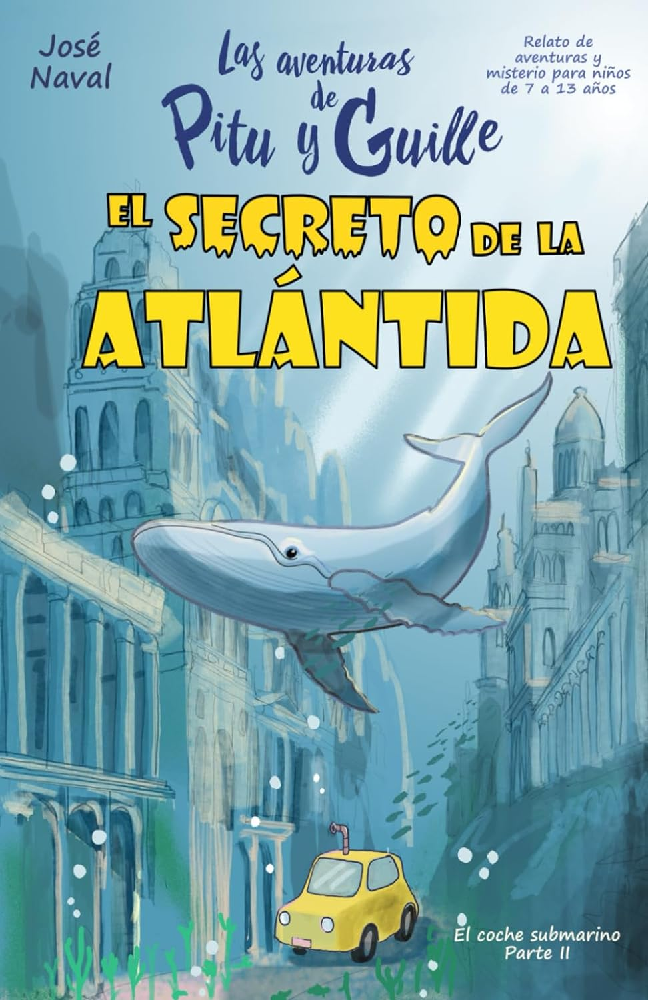

My Fourth Month Learning Spanish
Introduction: At the end of February 2024, I flew from Chengdu to Mexico via San Francisco ✈️. I had originally planned to spend six months traveling south 🗺️, from Mexico through Guatemala and Peru to Argentina. But after staying in Mexico City for a while, I fell in love with this sunny, tree-lined, warm, and friendly city for reasons I cannot quite explain. In the end, my travel plan became a four-month Spanish-learning plan 🗒️. I wanted to go from zero to a level where I could freely read novels and listen to podcasts in Spanish in four months.
At the end of the fourth month, I took the reading and listening parts of the SIELE Spanish proficiency test, scoring B2 in both listening and reading (I did not take speaking or writing; I estimate that I am around A2–B1 in those. I also took SIELE at the end of the second month and scored A2 in listening and B1 in reading). However, I have not fully achieved my original goal: there are still many unfamiliar words when I read novels, and I still need Spanish subtitles when listening to podcasts. So my plan from here is to slowly keep building my vocabulary.
The focuses of my fourth month:
- Listening: I listened intensively to the first 80 episodes of the Charlas Hispanas podcast, for about 40 hours of listening; I also did a great deal of extensive listening with Spanish podcasts and Spanish YouTube videos.
- Vocabulary: I read three Spanish children’s books and the Spanish translation of a Brazilian novel; I used Spanish Assistant to memorize A1–A2 vocabulary.
- Grammar: I attended classes at the Center for the Teaching of Foreigners at UNAM. From Monday to Friday, I had four and a half hours of class each day, where the teacher guided us through repeated practice with exercises, dialogues, essays, and listening activities using past and future tenses and object pronouns.
- Speaking: Part of the course involved rehearsing a Spanish play. The teacher corrected our pronunciation, and I memorized lines every day before and after sleep.
Here are the materials I used in my fourth month that I highly recommend:
- El alquimista: The Spanish translation of the bestseller The Alchemist, 175 pages long with simple vocabulary, which I highly recommend. I read the Chinese edition several years ago. It tells a story of pursuing dreams: “when you truly want to achieve something, the whole world will come to help you.” After taking SIELE, I listened to an English interview with the author, Paulo Coelho. He said, “Everyone actually knows what they truly want, but most people ignore it and do not dare to make it happen.”
- El secreto de la Atlántida: A 97-page children’s book for ages 7–13. The story is set by the sea and includes much ocean-related vocabulary, but it is not difficult overall. Its Kindle edition has beautiful illustrations and a very interesting plot.
- Charlas Hispanas: About ten minutes per episode, with each episode featuring a host discussing grammar, news, daily life, or the cultures and customs of Latin American countries. The three hosts are from Mexico, Peru, and Colombia. It is excellent for intensive listening because the pronunciation is clear and fluent, and every episode has a transcript, vocabulary list, and exercises.
My study plan for next month (I will return to China next month, and plan to study Spanish for about an hour and a half a day):
- Build vocabulary: Use Spanish Assistant to memorize DELE B1 vocabulary
- Practice listening: Listen intensively to Charlas Hispanas
P.S. A Review of Foreign-Language Learning Theory
The theory section in my first month introduced the two most important things in foreign-language learning: having enough enjoyment to drive you and spending enough time immersed in the language. In my second month, I introduced some tips for building vocabulary through reading. In my third month, I shared a method for reviewing notes with the Ebbinghaus forgetting curve.
During the beginner stage of the first three months, I improved my reading, built vocabulary, and became familiar with context through graded Spanish readers. Building on my reading ability, I began extensive Spanish listening practice in the fourth month to develop a feel for the language. After reaching B1–B2, vocabulary gradually became the bottleneck for improving reading and listening. So in the fourth month, I began diligently memorizing vocabulary lists with Spanish Assistant. I did not aim to remember them perfectly; I only hoped they would seem familiar when I encountered them in listening and reading.
If I continued learning in a Spanish-speaking country, from the fifth month onward I might practice lots of spoken conversation with classmates at a similar level and think in Spanish. That would also improve reading and listening speed, based on my experience learning English. But my gap year has now come to an end. After returning to China, I plan to slowly build my Spanish mainly by memorizing vocabulary and listening to podcasts. If I can find suitable materials, I hope to correct my Spanish pronunciation and become more confident speaking. Once my vocabulary has improved and my pronunciation is corrected, I will return to a Spanish-speaking country, where I expect my speaking to improve quickly.


Author Harold Gao
LastMod Jun 26, 2024